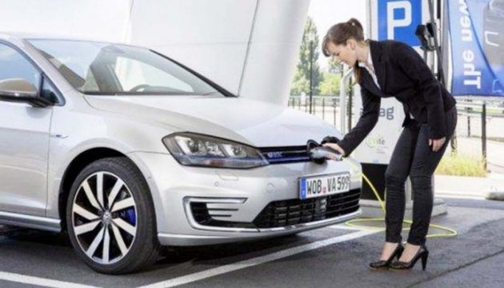

Наприклад, Уряди Нідерландів і Німеччини планують до 2030 року випускати лише екологічні автомобілі, що не утворюють шкідливих викидів. Франція має намір повністю відмовитися від бензинових та дизельних автомобілів до 2040 року. А Норвегія, будучи країною з найбільшою часткою електромобілів на ринку, вже до 2025 року відмовиться від двигунів внутрішнього згорання.
Дійсно, електромобілі – екологічний вид особистого транспорту, адже вони є безпечними для довкілля та здоров’я населення. В той час як звичні нам автомобілі, які працюють на бензинових і дизельних двигунах, викидають в атмосферу CO2, оксиди сірки та чадний газ.
За даними Всесвітньої організації охорони здоров’я Україна вже посідає 1-ше місце за рівнем передчасної смертності через забруднення атмосфери. Це означає, що щороку помирає 120 чоловік на 100 тис. мешканців. Кількість смертей в Україні через забруднене повітря вчетверо вище, ніж у п’яти найчистіших країнах світу, таких як: Ісландія, Фінляндія, Ліберія, Канада, Вануату разом узятих. Забруднення від дизельних та бензинових автомобілів допомагає нам не покидати провідної позиції в рейтингу.
Перехід на автомобілі з електричними двигунами вирішить цю проблему.
Ми звикли думати, що основною перевагою електрокарів є їхня екологічність. Але ці авто мають і інші переваги.
Основні види палива для автомобілів, такі як дизель та бензин, постійно зростають у ціні. Зарядка електромобіля коштує значно дешевше, ніж заправка звичайного автомобіля, а інколи взагалі безкоштовна – мережа зарядних станцій в Україні постійно розширюється. Сьогодні практично кожен великий торговий центр має зарядні станції на парковках, зростає кількість мережевих АЗК, які пропонують зарядку електромобіля. Лишилося тільки встановити домашні та офісні зарядні пристрої, якими будуть користуватися найчастіше. За вісім годин стандартного режиму підзарядки можна забезпечити пробіг до 200 км.
Дешевшим є і технічне обслуговування електрокара. Для нього потрібне якісне сервісне обслуговування. Це можливо за наявності спеціальних інструментів, навчання і сертифікації персоналу дилерських центрів.
Що ж до вартості власне електромобілів, як наприклад, преміальної Tesla, то вона дійсно "кусається". Це тому в Україні ми маємо переважно бюджетний Nissan Leaf, який, до того ж, продається неофіційно.
Вирішенням цієї проблеми компанії-члени Автомобільного комітету бачать прийняття відповідних законів про скасування ПДВ. Наразі, вже розроблено законопроекти №7156, №7156-2 та №7177. На наш погляд, його прийняття, прискорить темпи продажів, виведе ринок із тіні, а також позитивно вплине на вартість електромобілів – вони стануть доступнішими для населення та будуть представлені різними брендами.
Із прийняттям Закону України №822-VIII було скасовано лише ввізне мито, що попередньо складало 10%, але для розвитку ринку електромобілів в Україні цього замало.
Сьогодні Україна випереджає прогнози щодо розвитку електротранспорту за тенденціями продажів. За інформацією Федерації роботодавців автомобільної галузі, ґрунтуючись на даних МВС, у другому кварталі 2017 року продано на 27% більше електромобілів, ніж у попередньому, а в порівнянні з торішніми показниками за аналогічний період зростання склало 187%.
Україна має всі шанси (швидше за Європу) замінити автомобільний парк дизельних і бензинових машин на електромобілі і тим самим зменшити і середній вік автомобілів, що складає майже 20 років. У цьому питанні важливою є політика держави, направлена на піклування про здоров’я нації та покращення умов життя населення, яке матиме змогу і купувати, і менше витрачати грошей на обслуговування електрокару.